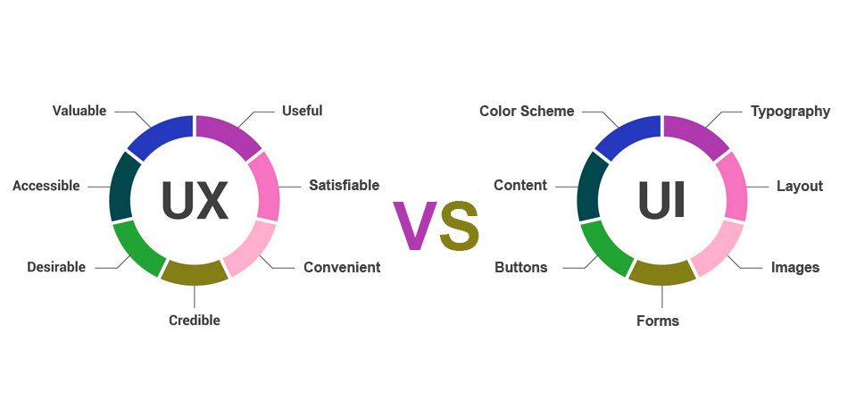

UX/UI простими словами
UX і UI- різні профілі дизайну, хоча завдання тісно переплітаються один з одним. Тому в залежності від потреб компанії, роботу по обом відгалуженням дизайну користувальницького інтерфейсу може виконувати один і той же чоловік. Безумовно, фахівця вигідно знати і розбиратися в обох напрямках. Хоча частіше в UX переходять з UI дизайну.
Ключові обов'язки UX / UI дизайнера: збір інформації про проект і його аудиторії, проектування призначених для користувача сценаріїв, розробка стилю, надання вказівок щодо завершення шрифтів, кольорів і розмірів, створення макетів і прототипів, отрисовка інтерфейсу в графічних редакторах.
Якщо ви чітко розумієте, що вам цікавіше займатися тим чи іншим напрямком поглиблено, то ось підмога, на чому акцентувати увагу

UX - це User Experience (дослівно: «досвід користувача»). Тобто це те, який досвід / враження отримує користувач від роботи з вашим інтерфейсом. Чи вдається йому досягти мети і на скільки просто або складно це зробити.
UI - це User Interface (дослівно «призначений для користувача інтерфейс») - то, як виглядає інтерфейс і те, які фізичні характеристики набуває. Визначає, якого кольору буде ваше «виріб», чи зручно буде людині потрапляти пальцем в кнопочки, читабельним чи буде текст тощо ...
UX / UI дизайн - це проектування будь-яких призначених для користувача інтерфейсів в яких зручність використання так само важливо як і зовнішній вигляд.